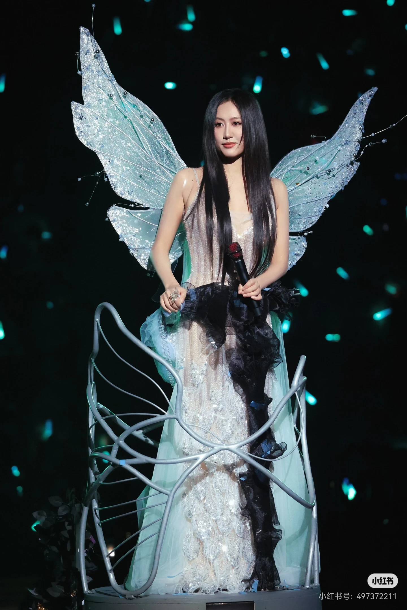

陈粒-感情抒发
我最喜欢的歌手
人物简介
陈粒，1990年出生于贵州省贵阳市，中国内地民谣女歌手、独立音乐人。
她的音乐以民谣为底色，大胆融合流行、电子等多种元素，歌词充满想象力与诗意。凭借《奇妙能力歌》《易燃易爆炸》《小半》等作品，她成为独立音乐领域最具代表性的创作歌手之一。
代表作品
- 《如也》（2015）——首张个人专辑，收录《奇妙能力歌》《历历万乡》
- 《小梦大半》（2016）——曲风转向电子化，收录《易燃易爆炸》
- 单曲《小半》（2017）——电影《喜欢你》主题曲，广泛传唱
- 《奇妙能力歌》——独立音乐时代的现象级作品
相关链接
舞台现场
